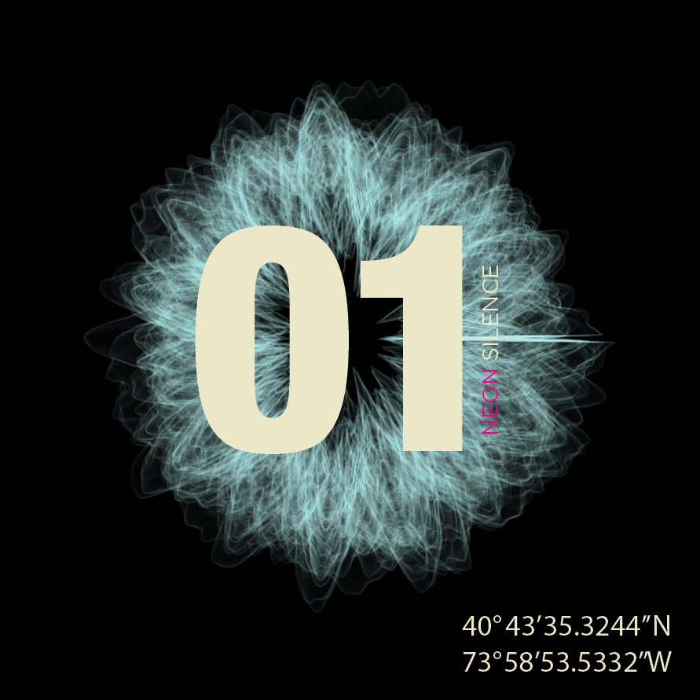
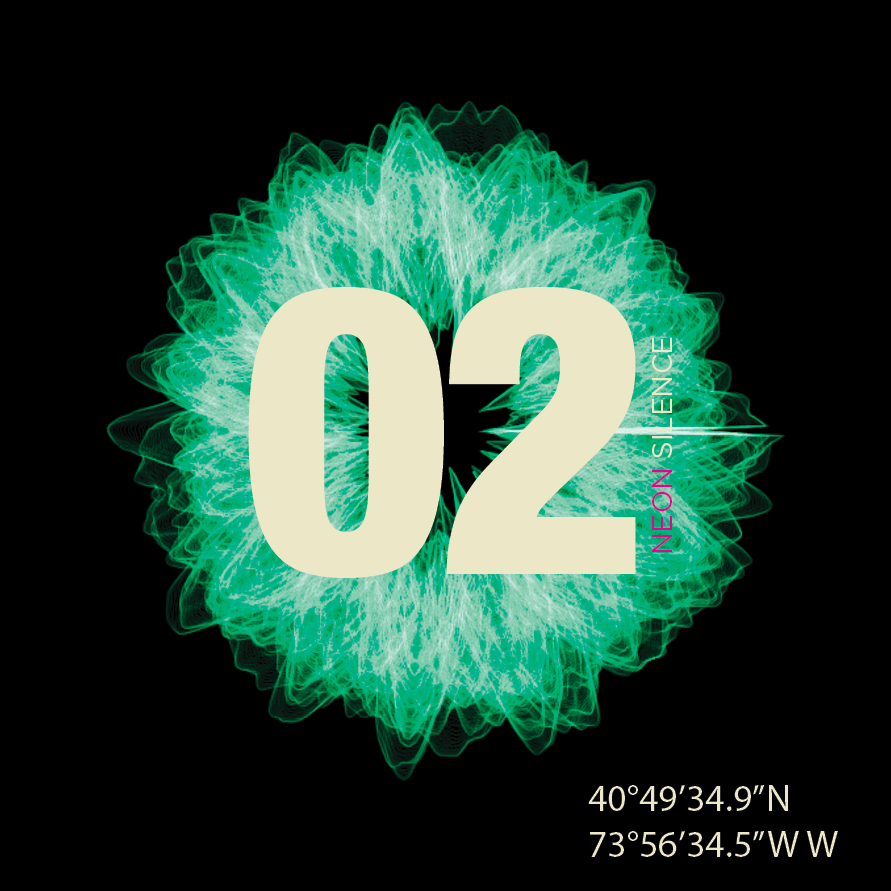
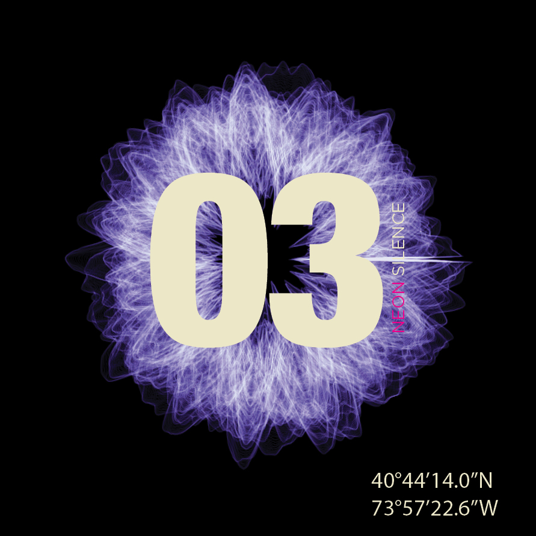

NEON SILENCE
Visualizing the Exchange of the Urban Soundscape
Objectives//
0.1 Sound as Superstructure
0.2 History of the Urban Soundscape
0.3 Listening and Generating from the Urban Soundscape
An impetus to listen...
40°49'35.1"N 73°56'34.4"W
The notion of silence and the Prophetic nature of sound..



Sorry, no Audio support
Sorry, no Audio support
Sorry, no Audio support